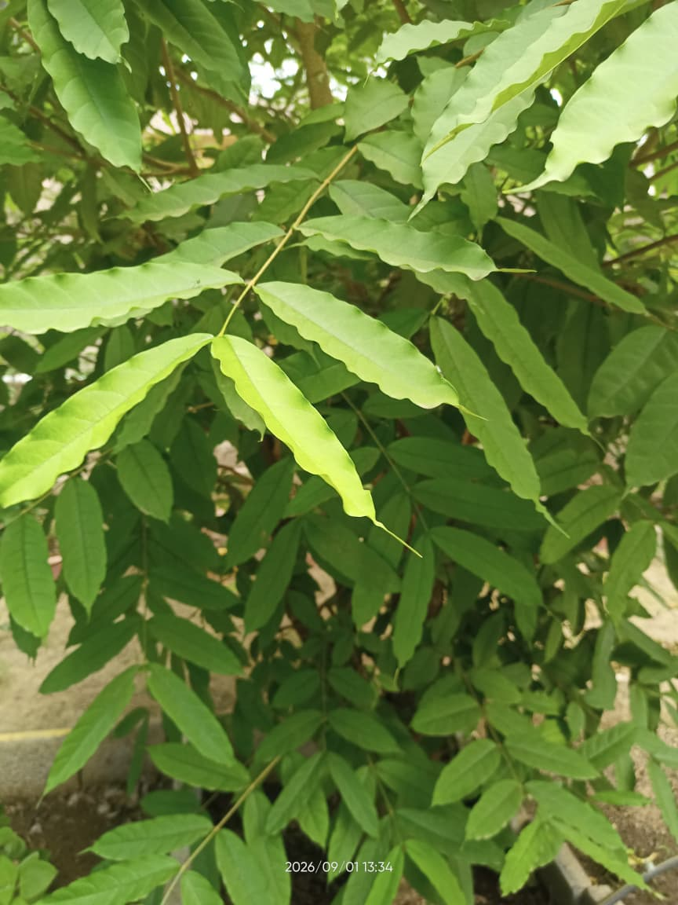

Botanical Name: Holarrhena pubescens (Wall. ex G.Don)
Common Name: Kurchi / Kuda / White Kuda
Family: Apocynaceae
Pandhara Kuda is a shrub with white flowers and elongated green leaves. It is commonly found in India.